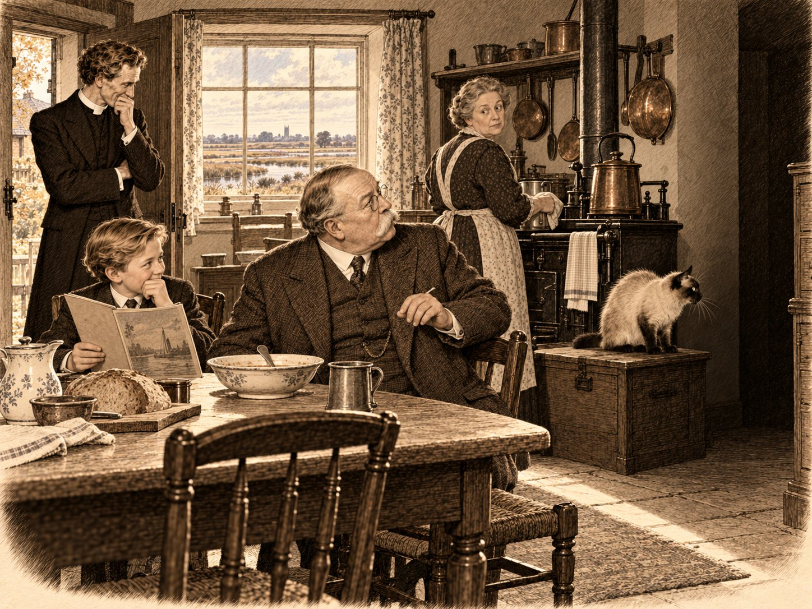

Голос из-за черты

Сэр Артур Конан Дойл приехал в Стамфорд в четверг, двадцать седьмого октября 1921 года, после недели лекций по большим городам Средней Англии. Он устал так, как устают люди, которые каждый вечер говорят двум тысячам незнакомцев самое важное в своей жизни, а наутро читают в газетах, что они легковерны. Поезд шёл медленно. Сэр Артур смотрел в окно на рыжие поля и на собственное лицо, которое появлялось в стекле всякий раз, когда поезд нырял под мост. Лицо было широкое, усы совсем белые, а очки он теперь надевал даже для того, чтобы прочесть расписание. Ему шёл шестьдесят третий год. За три года он похоронил сына, брата, мать и шурина, и порой ему казалось, что знакомых среди мёртвых у него стало больше, чем среди живых. Впрочем, мёртвые, по его твёрдому убеждению, никуда не делись.
На платформе его ждал высокий священник в широкополой шляпе. Сэр Артур узнал его не сразу и, узнав, понял, что тот, вероятно, тоже узнал его не сразу. Четырнадцать лет назад преподобный Эмброуз Морс, викарий Сент-Гатлака, был худым человеком с длинным бритым лицом и волнистыми каштановыми волосами. Он и сейчас был худ, и лицо у него осталось таким же длинным, но виски поседели, словно кто-то провёл по ним пальцем в мелу. В углах рта появились складки, какие бывают у людей, которые много смеялись, потом долго не смеялись, а потом начали снова.
— Сэр Артур, — сказал викарий и снял шляпу. — Вы стали шире.
— А вы седее, — ответил Дойл, и оба рассмеялись так громко, что носильщик обернулся.
До «Джорджа» было пять минут ходу, и они пошли пешком, а носильщик повёз за ними чемодан. Старая гостиница стояла у самой дороги на Лондон, и над ней, через реку, поднимался весь Стамфорд — серый и медовый камень, колокольни, шпиль святой Марии, дым из труб. Город казался не построенным, а выросшим из холма, как растут грибы, только очень медленно, в течение шестисот лет.
— Инспектор Крейн ещё служит? — спросил Дойл.
— Последний год. Он поседел и по-прежнему ждёт худшего. Раньше он просто ждал, а теперь уверен, что дождётся.
— Он считал меня вредным человеком.
— Он и сейчас так считает, — сказал викарий. — Но читает все ваши письма в газетах. Говорит, что надо знать врага.
Некоторое время они шли молча. Сэр Артур думал о том, что в прошлый раз сошёл с этого же поезда энергичным вдовцом, который ехал защищать невиновного ирландца и спорить с полицией, и что тогда он не верил ни во что, кроме доказательств. Теперь он верил в доказательства ещё больше, но доказательства у него были другие.
— Я вам должен объяснить, зачем я вас позвал, — сказал он наконец. — В письме я написал не всё. Миссис Аллардайс, у которой я буду завтра, писала мне ещё в сентябре. У неё в доме бывает молодой человек, медиум… Вы знаете, что такое медиум прямого голоса?
— Догадываюсь, что это не тот, кто пишет за духов карандашом.
— Не тот. У одних медиумов духи стучат по столу, у других водят рукой по бумаге. У медиума прямого голоса они говорят — сами, вслух, в темноте. Обычно через трубу: она поднимается в воздух, и из неё звучит голос. Этого молодого человека зовут Марш. Он солдат, его отравили ипритом под Ипром в семнадцатом году, и с тех пор он не может говорить иначе как шёпотом. Голоса через него тоже шепчут. Миссис Аллардайс пишет, что в этом шёпоте матери узнают своих сыновей. — Сэр Артур помолчал. — Завтра три года, как умер мой Кингсли.
Викарий ничего не сказал, только наклонил голову.
— Мне нужен свидетель, — продолжал Дойл. — Не верующий. Верующих у меня две тысячи в каждом зале. И не насмешник: насмешник пишет о сеансе то, что решил написать ещё до него. Мне нужен честный человек, который слышит, когда ему лгут. Я помню, как вы услышали Раддока. Миссис Аллардайс написала мне ещё одно… Она написала, что ваш старший сын погиб на Сомме в первый день.
— Первого июля, — сказал викарий. — У Фрикура.
Сэр Артур остановился посреди тротуара, так что носильщику пришлось объезжать его с тележкой.
— Моего Кингсли ранили первого июля, — сказал он. — Тоже на Сомме, в первый же день. Он вернулся домой с дырой в шее, поправился, стал учиться на врача, как я. А в восемнадцатом, когда все уже думали, что война кончилась, его забрала испанка. Он выжил в тот самый день, когда не выжил ваш. И всё равно не выжил.
— Значит, наши мальчики были там в одно утро, — сказал викарий.
Они снова пошли.
— Я вас должен предупредить, сэр Артур, — сказал викарий у дверей «Джорджа». — Я приду, раз вы зовёте. Но если ваш медиум приведёт ко мне Томми, я скажу то, что услышу.
— Поэтому я вас и зову, — ответил Дойл. — И это не мой медиум. Его проводника, кстати, зовут Сержант. Он погибший унтер-офицер и приводит к сидящим их мальчиков.
Викарий вдруг улыбнулся, как улыбаются чему-то своему, и сэр Артур не понял, что такого смешного в погибшем сержанте.
⁂
В холле «Джорджа» пахло воском, кожей и бараниной. Не успел сэр Артур расписаться в книге, как к нему подошёл молодой человек в клетчатом костюме и бабочке, с блокнотом в одной руке и карандашом в другой. Ему было за тридцать, он был румян, плотен, причёсан на пробор и говорил звучным баритоном, который, казалось, был рассчитан на зал побольше этого холла.
— Лейкок, сэр Артур. Фрэнсис Лейкок, из Питерборо. Я пишу для газет. Миссис Аллардайс оказала мне честь и позвала меня завтра, и я хочу сказать вам сразу, по-честному: я не верю ни в каких духов. Я сяду, буду смотреть и напишу ровно то, что увижу.
— Если вы напишете ровно то, что увидите, мистер Лейкок, вы окажетесь первым газетчиком на моей памяти, кто это сделал, — сказал сэр Артур, но сказал добродушно. Он любил честных скептиков, как охотник любит честную непогоду: с ними интереснее. — Садитесь, смотрите. Только не хватайте в темноте ничего руками. Медиум может пострадать.
— Я ни к чему не прикоснусь, сэр Артур. Я наблюдатель.
Он записал что-то в блокнот, поклонился и ушёл, а викарий посмотрел ему вслед с тем выражением, с каким смотрят на певца, который поёт громче, чем нужно.
К чаю пришла миссис Аллардайс. Это была маленькая женщина под шестьдесят, в чёрном, с пенсне на цепочке и быстрыми движениями человека, у которого всегда много дел, потому что одно дело у него отняли. Её единственный сын погиб в Месопотамии в семнадцатом году, и с тех пор, как сэр Артур понял из её писем, она жила между двумя мирами, как живут на границе: деятельно, тревожно и с постоянными новостями с той стороны. Она привела с собой медиума.
Сидни Маршу было под тридцать. Он был худ, светловолос, коротко острижен и одет в синий костюм, слишком просторный в плечах, — видно, с чужого или с прежнего себя. Лицо у него было молодое, а дыхание старое. Когда он сел, сэр Артур услышал, как воздух входит в него с трудом и выходит с тонким присвистом, словно в груди у него закипал маленький чайник. Он поклонился сэру Артуру и что-то прошептал — тихо и хрипло, так что пришлось наклониться, — а потом увидел викария и замолчал.
Он смотрел на викария долго. Миссис Аллардайс уже рассказывала о том, кто будет завтра в кругу, о прачке миссис Тёрнер, которую она зовёт даром, и о своём племяннике, который не верит и ходит только ради неё, а Марш всё смотрел. Потом он наклонился через стол и сказал своим свистящим шёпотом:
— Вы меня не помните, сэр. Я пел у вас дискантом.
Викарий поставил чашку.
— Марш, — сказал он. — Сидни Марш. Ты стоял в хоре справа, рядом с моим сыном. Ты пел «Ныне отпускаешь» на Сретение, тебе было лет десять, и весь приход боялся дышать. Потом вы уехали в Сполдинг.
— Отец там нашёл работу, сэр. — Марш улыбнулся, и улыбка у него вышла такая же, как дыхание: с трудом. — А Томми пел хуже. Он всегда торопился.
— Он всегда торопился, — повторил викарий.
Сэр Артур смотрел на них и думал, что впервые за много месяцев видит, как мёртвого вспоминают двое живых без всякой трубы, и что это, пожалуй, тоже своего рода сеанс. Мысль эта ему не понравилась, и он её отогнал.
⁂
В пятницу утром сэр Артур нанял в «Джордже» автомобиль и поехал в Сент-Гатлак. Четырнадцать лет назад он сам правил двуколкой, а возница сидел рядом и страдал. Теперь он сидел сзади и страдал сам: шофёр ехал медленно и осторожно, как везут больных и знаменитостей.
За Стамфордом холмы кончились, и начались Фены — осушенная болотная равнина к востоку от города, такая плоская, что небо над ней кажется больше, чем где-нибудь ещё в Англии. Сэр Артур помнил её майской, зелёной, с жаворонками. В конце октября она была чёрной и мокрой, вспаханной до самого горизонта, и по прямым, как линейка, каналам шла серая вода. Над всем этим стояло огромное бледное небо, по которому медленно ехали облака, словно и им некуда было торопиться.
Сент-Гатлак почти не изменился. Та же приземистая церковь с квадратной башней, тот же трактир «Плуг» у дороги, та же гать через низину. Только у церковной ограды появился новый серый камень, а на вывеске «Плуга» облупилась краска. Сэр Артур не удержался и попросил шофёра остановиться. В трактире, над стойкой, рядом с выцветшим королём Эдуардом, всё ещё висел его собственный портрет, вырезанный из журнала в девятьсот седьмом году. Он пожелтел, и усы на нём были чёрные.
— Это кто? — спросил он у трактирщика, молодого человека, которого в девятьсот седьмом, верно, ещё носили на руках.
— Не знаю, сэр, — ответил тот. — Висел при отце. Отец говорил, какой-то писатель, который здесь кого-то спас.
Сэр Артур решил, что это лучшее, что о нём говорили за последний год.
В доме викария его встретил мастиф цвета мокрого песка, молодой, огромный и приветливый до неприличия. Он положил лапы гостю на плечи, и сэр Артур, который был тяжелее большинства людей, почувствовал себя лёгким.
— Ферокс, — сказала женщина в дверях. — Место.
Пёс ушёл на место, а сэр Артур увидел миссис Морс. Ей было за пятьдесят. Он помнил её по девятьсот седьмому году как женщину, которая говорила вслух то, что мужу не хотелось слышать, и с тех пор она, по-видимому, не нашла причин отвыкнуть. Волосы у неё поседели, а глаза остались быстрыми и насмешливыми.
— Сэр Артур, — сказала она. — Вы приехали забрать моего мужа к духам. Заходите, я вас покормлю.
Кормили на кухне, потому что в столовой было холодно, а на кухне топилась плита. За столом сидел мальчик лет одиннадцати, светловолосый и серьёзный, с номером Strand Magazine, который он закрыл, как только вошёл гость, и больше уже не открывал. Его звали Сирил. На сундуке у плиты лежал очень старый кот — кремовый, с тёмной маской на морде, тёмными ушами и светло-голубыми глазами. Сэр Артур никогда не видел такого кота вблизи.
— Сиамский, — сказал викарий. — Его зовут Пами. Он прибыл из Бангкока в корзинке, когда моему старшему было три года, и считает этот дом своим посольством. Ему за двадцать.
— У нас в Сент-Гатлаке все кошки живут долго, — сказала миссис Морс, — потому что ничего не делают.
Пока она накрывала, сэр Артур спросил её, не пойдёт ли она вечером с мужем. Она поставила перед ним тарелку и выпрямилась.
— Нет, сэр Артур. Своего сына я в чужую гостиную не пущу. — Она помолчала и добавила уже мягче: — Томми писал нам с фронта только про погоду. Что жарко, что дождь, что грязь по колено. Ни разу не написал, что ему страшно или что он кого-то любит. Если ваш сержант заговорит его голосом про погоду, я, может быть, поверю.
Сэр Артур не нашёлся, что ответить. Он посмотрел на мальчика, и мальчик смотрел на него так, как смотрят мальчики на человека, о котором читали, — с недоверием, что он ест суп.
— У меня есть сын твоих лет, — сказал ему сэр Артур. — Адриан. Он тоже читает Strand и тоже считает, что я пишу слишком мало про сыщиков и слишком много про всё остальное.
Сирил покраснел, и стало ясно, что именно так он и считает.
— Сэр, — сказал он, решившись. — А правда, что вы были на Северном полюсе?
— На полюсе нет. Но близко. — Сэр Артур отодвинул тарелку. — Мне было двадцать лет, я учился на врача в Эдинбурге, и у меня не было денег. Мне предложили пойти судовым врачом на китобойце из Питерхеда на семь месяцев во льды. Я пошёл. Я видел, как лёд стоит стеной выше мачты, как солнце не садится неделями и как тюлени лежат на льдинах, словно прихожане на скамьях. Я трижды падал в ледяную воду, и капитан прозвал меня «великим северным ныряльщиком». Я вернулся оттуда мужчиной. — Он улыбнулся в усы. — По крайней мере, я так думал.
Сирил слушал не дыша. Миссис Морс посмотрела на сына, потом на мужа, и в её взгляде было что-то, чего сэр Артур тогда не понял.
Именно в эту минуту старый кот поднял голову и уставился в пустой угол за буфетом. Он смотрел туда долго и неподвижно, как смотрят на что-то, что видно только ему. Шерсть у него на загривке чуть приподнялась.
Сэр Артур замер. Он много раз читал и сам писал, что животные чувствуют присутствие тех, кого мы не видим. Он медленно повернулся к углу.
— Кошки видят то, чего не видим мы, — сказал он тихо.
— Там мышь, — сказал викарий.
Кот спрыгнул с сундука неожиданно легко для своих лет, и из-за буфета с писком вылетела мышь, пересекла кухню и исчезла под дверью в кладовую. Кот за ней не побежал: он счёл, что дал гостю достаточно доказательств, и снова лёг на сундук.
Сирил прыснул в тарелку. Миссис Морс сделала вид, что ничего не слышала. Сэр Артур посмотрел на викария, викарий — на него, и оба рассмеялись, второй раз за два дня.
— Я никогда не спорю с кошками, — сказал сэр Артур. — Но в этот раз он, кажется, на вашей стороне.
⁂
После завтрака они вышли в сад. За домом, у стены, стояли ульи — несколько старых соломенных и один белый, деревянный, похожий на маленький дом. Кот, который вышел за ними, сразу забрался на белый улей и сел на крышу.
— Этот улей мне прислал ваш знакомый, — сказал викарий. — Мистер Холмс с Даунса.
Сэр Артур посмотрел на него с подозрением, решил, что это шутка, и не стал переспрашивать.
— Я помню вашего старшего, — сказал он вдруг. — Я только сейчас понял. Когда я уезжал отсюда в девятьсот седьмом, за двуколкой бежали мальчишки. Один бежал дольше всех, до самой гати. Светлый, в коротких штанах. Это был он?
— Это был он, — сказал викарий. — В первый раз, когда вы приехали, ему было стыдно, что он бежит со всеми. Когда вы уезжали, ему уже не было стыдно.
Они постояли у ульев.
— Я хочу, чтобы вы знали, во что я верю, — сказал сэр Артур. — Чтобы вечером между нами не было недоразумений. Два года назад, в Портсмуте, я сам связал медиума бечёвкой, в шести местах. Мы сидели в темноте, держась за руки. И я услышал голос. Он сказал: «Прости меня». У нас с Кингсли был старый спор, он не верил в то, во что верю я. Потом я почувствовал на голове руку, большую и сильную, и меня поцеловали в лоб. Я спросил, счастлив ли он. Он сказал, что счастлив. — Сэр Артур говорил ровно, но вынул платок и вытер усы. — Я врач, мистер Морс. Я знаю, как обманываются чувства. Я напечатал этот отчёт, и надо мной смеялась вся Англия. Но я слышал своего сына.
Викарий долго молчал.
— Я не буду с вами спорить о Портсмуте, — сказал он наконец. — Я там не был. Я скажу только, чем мы с вами отличаемся. Вы держите своего сына за руку. А я своего отдал.
— Отдали, значит, потеряли.
— Отдал Тому, у Кого ничего не теряется. Это единственный способ не потерять. Я три года держал Томми, сэр Артур, и держал так крепко, что сам перестал слышать, как люди лгут, и сам лгал каждое воскресенье в «Отче наш». Потом отпустил. Теперь, когда мой младший спрашивает, был ли у него брат, я отвечаю: есть.
— А мой говорит со мной, — сказал сэр Артур.
— Может быть. Но меня всегда смущало в ваших мёртвых одно. — Викарий взял с крыши улья кота, и тот позволил. — Я читал ваши книги и отчёты. Ваши мёртвые все говорят одинаково. Им там светло, они счастливы, они просят не плакать. Мой Томми не был похож ни на кого, он торопился, пел хуже Марша, писал про погоду и держал в окопе ежа. Если небеса делают всех одинаковыми, это не небеса, а казарма.
— Им трудно говорить, — сказал сэр Артур. — Через медиума говорить — всё равно что кричать через реку. Доходит самое простое.
— Может быть, — сказал викарий снова, и сэр Артур с досадой заметил, что в этом «может быть» не было ни капли насмешки. — Посмотрим вечером, что дойдёт.
⁂
Дом миссис Аллардайс стоял на Барн-Хилл, крутой улочке над Стамфордом, и был сложен из того же жёлтого камня, что и весь город, только камень здесь был старше и темнее. Когда сэр Артур и викарий поднялись к нему в половине девятого, уже стемнело, и окна верхних этажей светились над улицей, как фонари на корабле.
Горничная, румяная девушка по имени Китти, приняла у них пальто с таким видом, будто принимала улики.
— Наверху, сэр, в задней гостиной, — сказала она. — Только там краской пахнет. Мистер Марш днём перекрашивал полосу на своей трубе, чтоб светила ярче, и закапал мне скатерть. Её теперь не отстирать.
Задняя гостиная была небольшой комнатой с тяжёлыми шторами на окне. Мебель из неё вынесли, оставив только стулья, расставленные полукругом, граммофон на столике у двери и лампу под красным абажуром. Правый дальний угол отгораживала тёмная бархатная занавеска на медном пруте: это был кабинет, место медиума. Сэр Артур с одобрением заметил, что за занавеской нет ничего, кроме стены, ковра и простого деревянного кресла с подлокотниками. Перед занавеской на ковре стояла жестяная труба в человеческую руку длиной, с широким раструбом, вокруг которого шла полоса светящейся краски. Краска действительно была свежей; в комнате пахло скипидаром и ещё чем-то кисловатым, как пахнет в мастерских.
Собрались почти все. Миссис Аллардайс в чёрном шёлке встречала гостей с той деловой нежностью, с какой встречают гостей на свадьбе и на поминках. Её племянник Руперт, худой молодой человек с прилизанными волосами и усиками, которые он, видимо, надеялся отрастить к сорока годам, стоял у окна и всем видом показывал, что пришёл сюда не по своей воле. Он служил клерком у стряпчего и, как понял сэр Артур, со временем должен был унаследовать этот дом, если тётка не отдаст его кому-нибудь более духовному.
У стены, на краешке стула, сидела большая женщина в чёрном платье, с красными, распаренными руками, сложенными на коленях. Это была миссис Тёрнер, прачка из прихода Сент-Мартин, за рекой. Миссис Аллардайс звала её даром, потому что на сеансах к ней уже дважды приходил сын, погибший под Аррасом.
— Я ваши сорочки, сэр, стираю, — сказала она сэру Артуру вместо приветствия. — В «Джордже». Я на них всю гостиницу стираю, и вашу тоже. Хорошее полотно.
Сэр Артур поблагодарил её с той серьёзностью, с какой благодарил бы за рецензию.
Мистер Лейкок пришёл последним, в той же бабочке, с тем же блокнотом, и громко объявил, что готов ко всему, кроме обмана. Марш уже был здесь. Он сидел у камина, держал стакан воды обеими руками и дышал со своим маленьким кипящим чайником внутри. На викария он смотрел чаще, чем на остальных.
Сэр Артур сам связывал медиума: он настаивал на этом везде, где сидел, потому что знал, как мало значит чужое честное слово для газет. Марш сел в кресло за занавеской. Сэр Артур привязал бечёвкой оба его запястья к подлокотникам, обе щиколотки к ножкам кресла и ещё дважды обмотал бечёвку вокруг груди и спинки, а каждый узел затянул морским узлом, которому выучился на китобойце, и заставил всех посмотреть и потрогать. Руперт подёргал узлы с видом человека, который ищет ошибку в чужом счёте, и не нашёл.
— Вы знаете, мистер Марш, — сказал Руперт, отходя, — что по закону о бродяжничестве за гадание и обман дают до трёх месяцев?
— Руперт! — сказала миссис Аллардайс.
— Я только напоминаю, тётя. Это не я придумал закон, это король Георг Четвёртый.
Марш ничего не ответил. Он сидел привязанный, бледный, и смотрел поверх голов.
Потом сэр Артур объявил правило, которое ввёл после Портсмута. Сидящие образуют полукруг перед кабинетом и держатся за руки. Двое крайних сидят у самой занавески и всё время, пока темно, держат свободную ладонь на колене медиума, чтобы все знали, что он не встаёт.
— Я сяду с краю, — сразу сказал Лейкок. — Если позволите, сэр Артур. Я обещал своим читателям смотреть ему в руки.
— В темноте вы ничего не увидите.
— Тогда буду держать ему колено. Это даже лучше.
Никто не возражал. Сэр Артур сел с другого края, слева от кабинета, Лейкок — справа. Между ними полукругом сели миссис Аллардайс, Руперт, миссис Тёрнер и викарий; викарий оказался рядом с Лейкоком и взял его за руку. Китти завела граммофон: тихо и неуверенно заиграло «Аве Мария», потому что другой пластинки, достаточно благочестивой, в доме не нашлось. Потом Китти погасила красную лампу и вышла, прикрыв дверь.
В последнюю секунду, пока лампа ещё светила, сэр Артур увидел лицо викария. Оно было спокойным и внимательным, как у человека, который сидит не в гостиной, а на клиросе и ждёт, когда вступит хор. А из-за занавески, уже почти в темноте, донёсся хриплый шёпот, обращённый, как ему показалось, к одному викарию:
— Не сердитесь на меня сегодня, сэр.
⁂
В ту же ночь, в своём номере в «Джордже», сэр Артур сел за стол и до трёх часов писал отчёт для лондонского еженедельника спиритуалистов «Лайт», что значит «Свет». Он писал такие отчёты всегда, по горячим следам, потому что был врачом и знал, что память лжёт уже к утру. Вот что он написал.
Сеанс в Стамфорде 28 октября 1921 года. Отчёт сэра А. Конан Дойла.
Я излагаю факты в том порядке, в каком они происходили, и прошу читателя помнить, что пишу через несколько часов после событий, когда ещё не успел обдумать их значение.
Сеанс проходил в частном доме миссис Б. Аллардайс в Стамфорде, в задней гостиной верхнего этажа. Медиум — мистер Сидни Марш, бывший солдат, отравленный ипритом в 1917 году; из-за поражения гортани и лёгких он не может говорить иначе как шёпотом, причём каждый его вдох и выдох сопровождается отчётливым свистом. Я сам привязал медиума к креслу бечёвкой в шести местах и проверил узлы при свидетелях. Кресло стояло за занавеской в углу.
Сидящие расположились полукругом в следующем порядке, если считать слева от кабинета: я сам; миссис Аллардайс; её племянник мистер Р. Аллардайс; миссис Тёрнер; преподобный Э. Морс, викарий Сент-Гатлака; мистер Ф. Лейкок, журналист из Питерборо. Мы держались за руки. Мистер Лейкок и я, сидевшие с краю, держали свободную ладонь каждый на ближнем к нему колене медиума. Должен заметить, что и мистер Морс, и мистер Лейкок пришли как люди, не верящие в возможность общения с умершими, а мистер Р. Аллардайс — как человек открыто враждебный.
Свет погасили около девяти. Я произнёс краткую молитву. Затем мы спели гимн кардинала Ньюмена «Веди, благой Свет»: «Веди, благой мой Свет, сквозь тьму вокруг, веди меня! Ночь темна, и я далеко от дома…» Пели все, громче всех — мистер Лейкок, у которого прекрасный баритон, и мистер Морс, который, как мне показалось, знает все гимны наизусть. Сам я, признаюсь, не певец.
Через несколько минут после гимна дыхание медиума изменилось: свист стал глубже и реже, как у спящего. Затем из темноты раздался шёпот. Он был хриплым, как шёпот самого медиума, но речь шла в другой манере, отрывисто и по-военному. Голос назвался Сержантом и сказал, что «привёл мальчиков». В тот же миг труба со светящейся полосой поднялась с ковра и поплыла перед нами на высоте человеческого роста. Я ясно видел, как светящееся кольцо двигается вдоль полукруга, и в это же время ощущал под ладонью неподвижное колено медиума.
Первым пришёл сын хозяйки дома, лейтенант, погибший в Месопотамии. Он назвал мать домашним именем «Би», которого, как она уверяет, не знал никто вне семьи, сказал, что ему тепло и светло, и попросил её не держать его комнату запертой. Миссис Аллардайс плакала. Затем пришёл сын миссис Тёрнер. Он сказал, что «больше не холодно» и что «мамины руки он помнит». Труба при этом коснулась щеки миссис Тёрнер, и та громко сказала: «Джимми». Признаюсь, в эту минуту никто в комнате не мог бы остаться равнодушным.
Затем Сержант сказал: «Тут джентльмен к отцу. Из госпиталя». Не стану скрывать, что мне трудно об этом писать. Шёпот у самого моего лица произнёс: «Отец, прости меня». И затем: «Я счастлив». Это те самые слова, которые я слышал два года назад в Портсмуте, и я узнал их сразу. Я ответил ему, как ответил тогда, что мне нечего ему прощать.
После долгой паузы Сержант сказал, что «тут мальчик из Фенов, сын священника». Шёпот, обращённый к мистеру Морсу, произнёс: «Папа, не горюй. Я не мучился. Всё было сразу». Я ожидал, что мистер Морс ответит, но он долго молчал, а потом сказал в темноту негромко и, как мне показалось, очень ласково: «Сидни. Ты же пел с ним в одном хоре».
Это вмешательство я счёл бы неуместным, если бы не то, что последовало. Наступила полная тишина. Потом из кабинета, уже не голосом Сержанта, а собственным свистящим шёпотом медиума, раздалось: «Простите, сэр… это не он… это я… это всё…» Я понял, что транс нарушен и медиум выходит из него в мучительном состоянии; такое, как известно, бывает, когда к медиуму обращаются по имени. Миссис Аллардайс сказала: «Сила слабеет. Споём». И мы снова запели «Веди, благой Свет».
Во время этого второго гимна произошло то, что я считаю самым сильным проявлением, какое мне приходилось наблюдать. Колено медиума под моей ладонью начало биться с необычайной силой, всё тело его дрожало и рвалось в путах, кресло скрипело. Я знаю такие состояния по сеансам с мистером Пауэллом, но здесь сила была, без преувеличения, как никогда. Пение, по-видимому, повлияло на всех: во втором куплете некоторые голоса умолкли от волнения, и пели, насколько я мог расслышать, только дамы, мистер Морс и я. К концу гимна дрожь под моей рукой стихла, и медиум, как я тогда подумал, погрузился в глубокий покой.
После гимна прошло около минуты полной тишины. Затем светящаяся труба снова поднялась, на этот раз справа от кабинета, если смотреть от нас, и раздался шёпот Сержанта. Этот шёпот я запомнил дословно, потому что он поразил меня своей ясностью: он звучал чище и твёрже, чем прежде, словно голос освободился от той земной болезни, что мучила его весь вечер. Он сказал:
«Наш мальчик ушёл к нам. Он просто перестал дышать. Ему больше не больно. Не будите его».
Труба опустилась. Наступила тишина. Я окликнул Сержанта, но ответа не было. Я ощущал под ладонью колено медиума: оно было совершенно неподвижно. Прошло, вероятно, две или три минуты. Потом миссис Аллардайс, не выдержав, встала и зажгла красную лампу. По моим часам было без тринадцати минут десять.
Медиум сидел в кресле, уронив голову на грудь. Узлы были целы. Труба лежала на ковре у правого края занавески. Я тотчас осмотрел его как врач. Пульса не было, дыхания тоже; губы и ногти посинели. Сомнений у меня не было: лёгкие, давно и тяжело поражённые газом, не выдержали напряжения глубокого транса. Не исключаю, что внезапный свет, против которого предостерегают все опытные исследователи, ускорил конец, но причина, несомненно, лежит глубже.
Мистер Р. Аллардайс первым бросился к кабинету, сорвал занавеску и стал развязывать узлы, пока я не остановил его. Миссис Аллардайс повторяла, что это она убила его светом. Мистер Лейкок был бледен и что-то записывал. Мистер Морс долго стоял молча, потом закрыл медиуму глаза и прочёл над ним молитву.
Я кончаю этот отчёт с чувством, которое трудно выразить. Мы были свидетелями смерти, и смерть эта горька. Но прошу читателя заметить главное: о том, что медиум ушёл, нам сказали прежде, чем мы это узнали. В темноте, при закрытой занавеске, когда ни один из сидящих не мог знать, что происходит в кабинете, голос с той стороны сообщил нам, что наш друг перестал дышать. Я много лет изучаю эти явления и не знаю доказательства сильнее.
А. К. Д. Гостиница «Джордж», Стамфорд. В ночь на 29 октября 1921 года.
⁂
Викарий пришёл в «Джордж» в субботу в девятом часу. Он ночевал у знакомого священника в городе, и вид у него был такой, словно ночевал он на вокзальной скамье. Сэр Артур тоже почти не спал. Он позвонил, чтобы им принесли кофе, и протянул викарию исписанные листы.
— Прочтите, прежде чем я отправлю, — сказал он. — Вы были там. Если я в чём-то ошибся в фактах, скажите. В толковании я не ошибся, но вы, вероятно, скажете и об этом.
Викарий читал медленно, держа листы далеко от глаз, как держат ноты. Сэр Артур смотрел в окно на Лондонскую дорогу, по которой тянулась телега с репой, и думал о том, что за всю жизнь не написал ни одной страницы, которую так хотелось бы показать и так страшно было бы показывать.
— Два вопроса, — сказал наконец викарий. — Вы пишете, что труба в последний раз поднялась справа от кабинета. Вы уверены?
— Совершенно. Весь вечер она плавала вдоль полукруга, а в последний раз встала справа, у самого края занавески. И упала там же.
— Второй. Вы пишете, что последний шёпот был чище и твёрже прежнего. Что вы имеете в виду?
— То, что пишу. Весь вечер Сержант говорил хрипло, со свистом, как говорил сам Марш. Это естественно: дух пользуется тем органом, который ему дан. В последний раз свиста не было. Голос был ясный, как у здорового человека. Я понимаю это так, что дух уже не был связан больным телом.
Викарий положил листы на стол и разгладил их ладонью.
— Сэр Артур, вы честный свидетель. Всё, что вы видели и слышали, вы записали так, что я могу проверить каждую строку. Вы пишете, что колено под вашей рукой затихло к концу гимна. Вы пишете, что Сержант сообщил о смерти до того, как зажгли свет. Значит, когда Сержант шептал, Сидни уже не дышал.
— Именно это я и пишу. Он ушёл, и они сказали нам об этом.
— Весь вечер Сержант шептал лёгкими Сидни, — продолжал викарий. — С его свистом. Вы сами это заметили. А в последний раз у Сержанта были здоровые лёгкие. Чьи?
Сэр Артур хотел ответить и не ответил.
— И ещё труба, — сказал викарий. — Вы привязали Сидни в шести местах. Я видел ваши узлы, Руперт их дёргал, они были целы и после. Весь вечер труба летала и касалась щеки миссис Тёрнер. Сидни не мог её поднять. Значит, в той комнате была ещё одна рука, живая и проворная. Я пока не говорю, что эта рука убила. Я говорю только, что она носила трубу. А раз она носила трубу, она могла и шептать в неё.
— Вы хотите сказать, что кто-то из нас…
— Я хочу сказать, что ваши духи знали ровно столько, сколько знал тот, кто в ту минуту был рядом с Сидни. Что он перестал дышать. Знать это мог только тот, кто ему не дал.
Сэр Артур встал. Он был очень большой, и, когда вставал, это было заметно.
— Вы говорите об убийстве, мистер Морс. Я врач. Я осматривал тело.
— Вы осматривали его, когда уже знали от духов, отчего он умер, — тихо сказал викарий.
Это было сказано без всякой злости, и потому задело сильнее. Сэр Артур почувствовал, как у него краснеет шея.
— Я позвал вас как свидетеля, а не как прокурора.
— Я знаю. — Викарий тоже встал. — Простите меня. Но я был там не только свидетелем, сэр Артур. Это я назвал его по имени. Он начал говорить своим голосом. Он сказал: «это не он, это я». А через пять минут его не стало. Я не могу записать это в силу духа. Я его крестил.
Они стояли друг против друга над столом с отчётом, два отца, у которых умерли сыновья, и сэр Артур вдруг понял, что за весь этот разговор ни разу не подумал о Кингсли.
В дверь постучали.
⁂
Инспектор Крейн вошёл так, как входят люди, которые заранее знают, что разговор будет неприятным, и даже немного этому рады. Он был совсем сед, сух, в тёмном пальто, с котелком в руке, и сэр Артур узнал его сразу: он узнал бы это выражение лица и через сорок лет.
— Сэр Артур, — сказал Крейн. — Мы встречались.
— В девятьсот седьмом, инспектор.
— Я помню, сэр. Такое не забывается, как зубная боль. — Он кивнул викарию без всякого удивления, словно викарий входил в обстановку любого происшествия в округе, как фонарный столб. — Внезапная смерть, сэр Артур. Коронер извещён, дознание в понедельник. Мне нужно знать, кто связывал покойного, кто держал его за колено и кто объявил, что он умер своей смертью.
— Я, я и я, — сказал сэр Артур.
— Так я и думал. — Крейн сел без приглашения и достал записную книжку. — Значит, вы привязали человека к креслу, держали его за колено, пока он умирал, а потом как врач засвидетельствовали, что он умер от духов.
— От отравленных газом лёгких, инспектор.
— В вашем отчёте, который мне тут показали внизу, сказано, что от духов.
— Кто вам его показал?
— Никто, сэр. Он лежит у вас на столе.
Сэр Артур посмотрел на стол и сел.
Крейн записывал долго. Когда викарий упомянул о свисте и о трубе, инспектор поднял на него глаза и сказал: «Вот как», — тем тоном, каким говорят «я так и знал», хотя ничего такого раньше не знал. Потом он сказал, что великий писатель, по его мнению, человек вредный, а теперь, прошу прощения, ещё и легковерный, но не убийца. А впрочем, видал он всяких.
В эту минуту коридорный принёс на подносе три телеграммы. Все три были из лондонских газет и все три были на имя сэра Артура. Он прочёл первую вслух, потому что не смог удержаться:
«ПОЛУЧЕНО ИЗ СТАМФОРДА МЕДИУМ ПРИЗВАН ДУХАМИ ВО ВРЕМЯ СЕАНСА СМЕРТЬ ПРЕДСКАЗАНА ГОЛОСОМ СВИДЕТЕЛЬ КОНАН ДОЙЛ ПРОСИМ ПОДТВЕРЖДЕНИЯ И КОММЕНТАРИЯ»
Две другие были такие же, только короче.
— Кто-то отправил это до восьми утра, — сказал сэр Артур. Голос у него стал тихим и тяжёлым. — До того, как я проснулся. До того, как полиция узнала. Моим именем.
— Газетчик в этом деле один, — заметил Крейн, — и он сидел с вами в кругу.
— Это не преступление, инспектор, — сказал сэр Артур, хотя ему очень хотелось, чтобы это было преступлением. — Это газета.
Потом прибежала Китти, без шляпы, и сказала, что миссис Аллардайс слегла и никого не принимает, только всё время говорит, что это она его убила, потому что зажгла свет, а сэр Артур сам говорил, что свет убивает медиумов. Китти посмотрела на сэра Артура так, как смотрят на доктора, который выписал не то лекарство.
Когда все ушли, сэр Артур долго сидел над своим отчётом. Он перечитал строку «чище и твёрже, чем прежде», потом строку «некоторые голоса умолкли от волнения», потом строку «я ощущал под ладонью неподвижное колено». Все строки были верны. Он записал их честно. Он только не знал теперь, что именно записал.
⁂
После обеда сэр Артур пошёл в полицейский участок сам. Он шёл и думал о том, что четырнадцать лет назад заставил министерство внутренних дел пересмотреть дело, которое оно не хотело пересматривать, и что тогда это было легко, потому что правда была на стороне того, во что он верил. Теперь правда могла оказаться против. Он подумал об этом, поморщился и пошёл быстрее.
— Я прошу вскрытия, инспектор, — сказал он Крейну. — Полного, с полицейским хирургом. Если этот человек умер от газа и транса, я хочу, чтобы это сказал не я. Если нет — тем более.
Крейн посмотрел на него долгим взглядом, в котором удивление боролось с подозрением и не могло победить.
— Вы понимаете, сэр Артур, что можете лишиться своего лучшего доказательства?
— Я понимаю, что могу лишиться права смотреть себе в глаза, когда бреюсь, — ответил сэр Артур. — Это хуже.
Крейн дал ему констебля и ключ от комнаты, где жил Марш. Викарий ждал на улице.
Комната была над шорной лавкой у моста, и на лестнице пахло кожей и дёгтем. Хозяйка, вдова шорника, открыла им и стояла в дверях, сложив руки, как стоят на похоронах родственники, которые не знают, положено ли им плакать. Комната была маленькой и почти пустой: железная кровать, умывальник, стул, полка. На полке лежали псалтирь в чёрном переплёте и жестяная коробка из-под леденцов. Сэр Артур открыл псалтирь. На форзаце детским круглым почерком было написано: «С. Марш, дискант. Сент-Гатлак. 1904». Он молча передал книгу викарию.
В коробке были две фунтовые бумажки, пенсионная книжка, где значилось, что рядовой Марш отравлен газом под Ипром в июле 1917 года и признан негодным, и сложенный вчетверо листок. Листок был вырван из блокнота, исписан мелким ровным почерком — не тем, что на форзаце, и не тем, каким пишут солдаты, — и до середины заполнен заметками вроде записей в бухгалтерской книге:
«Аллардайс — сын Хью, лейт., Месопотамия, 1917. Звал мать „Би“. Комната заперта с тех пор».
Ниже, другой строкой:
«Тёрнер — сын Джеймс, Аррас. Мать прачка. Руки».
Ниже было оторвано.
Сэр Артур долго стоял с листком в руке. Он вспомнил, как миссис Аллардайс плакала в темноте, услышав «Би», и как сам он думал в ту минуту, что этого имени не знает никто вне семьи.
— Это не его рука, — сказал викарий. — Он писал так, как на форзаце, только крупнее. Я видел его записку миссис Аллардайс.
— К нему ходил кто-нибудь? — спросил сэр Артур хозяйку.
— Ходил господин, сэр. Из газеты. Говорили, разоблачать его хочет. Да что разоблачать: мальчик и так еле дышал. Они подолгу сидели, а потом господин уходил, и мистер Марш всю ночь кашлял.
На обратном пути сэр Артур молчал, а викарий его не тревожил. Только у моста, где под ними шумел Уэлленд, сэр Артур сказал:
— Я напечатал свой портсмутский отчёт в двух журналах. «Прости меня». «Я счастлив». Эти слова прочли тысячи людей. Вчера в темноте мне сказали ровно эти слова, и я обрадовался, что узнал их. Мой сын сказал мне в Стамфорде то, что я сам напечатал.
Викарий ничего не ответил.
— Портсмут был, — сказал сэр Артур упрямо. — Там я был один среди незнакомых людей, и никто там не читал «Лайт» с карандашом в руке. Портсмут был.
— Я не был в Портсмуте, — сказал викарий, и сэр Артур понял, что большего от него не дождётся и что большего ему и не нужно.
Вечером в баре «Джорджа» Крейн рассказал ему, не без удовольствия, новость. Мистер Руперт Аллардайс признался, что во время второго гимна отпустил руки дам, встал и открыл окно, потому что от запаха краски его мутило. Обе дамы это подтвердили: их руки были свободны. Окно было в трёх шагах от кабинета. А тётушка, как стало известно Крейну от стряпчего, у которого Руперт служил, собиралась в ноябре переписать завещание в пользу «стамфордского кружка» и его медиума.
— Вот вам и рука, сэр Артур, — сказал Крейн. — Живая и проворная. Как раз по словам вашего викария.
Сэр Артур подумал, что Руперт ему не нравится и что это, пожалуй, лучшая причина не спешить с выводами.
⁂
В воскресенье он поехал в Сент-Гатлак к утрене. Он не был в англиканской церкви, кажется, со свадьбы кого-то из племянников. Вырос он католиком, давно перестал им быть и теперь ходил в спиритуалистские залы, где пели те же гимны, только без епископов. Миссис Морс посадила его рядом с собой, на скамью викария, под каменной доской с одиннадцатью именами. Он прочёл их все. Среди них стояло: «Томас Морс».
Служба шла неторопливо, как идёт деревенская служба, которой некуда спешить, потому что вечность всё равно впереди. Хор из шести мужчин и стольких же мальчишек пел старательно и немного вразнобой. На середине псалма викарий, не прерывая чтения, коротко обернулся к хору, а потом снова опустил глаза в книгу.
После службы сэр Артур спросил, на кого он оглянулся.
— На Хаммонда, — сказал викарий. — Это наш старый Хаммонд, он поёт басом пятьдесят лет. Сегодня на втором стихе он замолчал и больше не вступал. Он не мог забыть слова, он их знает лучше меня. Значит, болит горло. Агнес, отнеси ему вечером мёду.
— Вы услышали, что он молчит, — медленно сказал сэр Артур.
— В хоре это слышнее, чем фальшь, — сказал викарий. — Фальшивую ноту слышно один миг. А дыру — всё время, пока поют.
Сэр Артур остановился на церковной дорожке. Почти тридцать лет назад он написал рассказ, в котором сыщик раскрыл дело потому, что собака ночью не залаяла. Его тогда хвалили за эту мысль, и он ею гордился. Теперь он стоял среди мокрых надгробий и думал, что в пятницу вечером в той комнате тоже было что-то, что не залаяло, а он записал это в отчёт как волнение.
— Мистер Морс, — сказал он. — Кто замолчал во втором куплете?
— А вы как думаете, сэр Артур? Вы сидели слева и пели весь гимн. Громко и мимо нот — так поют очень честные люди. Я слышал вас всё время.
— Я не слушал других.
— Никто не слушает других, — сказал викарий. — Поэтому в темноте и можно сделать всё что угодно, пока люди поют.
⁂
В понедельник, тридцать первого октября, в канун Дня всех святых, коронер открыл дознание в зале городской ратуши и через двадцать минут отложил его на неделю. Этих двадцати минут хватило, чтобы полицейский хирург, сухой человек с бакенбардами, прочёл своё заключение. Сэр Артур слушал его, как врач слушает другого врача: сначала с профессиональным интересом, потом с профессиональным стыдом.
Лёгкие покойного были действительно тяжело поражены газом много лет назад. Но умер он не от этого. В белках глаз были точечные кровоизлияния, на внутренней стороне губ — ссадины от собственных зубов, а на щеках, если смотреть при хорошем свете, проступали бледные пятна от пальцев. Кто-то зажал ему ладонью нос и рот и держал, пока он не перестал дышать. Человеку со здоровыми лёгкими на это понадобилось бы несколько минут; человеку с лёгкими Сидни Марша — гораздо меньше. По расположению пятен хирург заключил, что ладонь легла с правой стороны, если стоять лицом к креслу.
Справа от кабинета сидел Лейкок. Справа было и окно, у которого стоял Руперт.
После дознания сэр Артур попросил Крейна об одном одолжении и получил его без труда, потому что Крейну оно ничего не стоило. Он поехал на Барн-Хилл. Миссис Аллардайс лежала в спальне, маленькая, в огромной кровати, и смотрела в потолок. Сэр Артур сел рядом, взял её руку, как брал руки больных тридцать лет назад, и сказал, что ошибся.
— Не свет его убил, миссис Аллардайс. Когда вы зажгли лампу, он уже был мёртв. Его убил человек, и не вы.
Она заплакала, и он понял, что впервые за три дня она плачет не от вины. Это было, пожалуй, единственное за всё время в Стамфорде, о чём он не жалел.
Внизу его ждала Китти. Она хотела сказать ему что-то важное и боялась, что не к месту. Сэр Артур давно заметил, что горничные, как и кошки, видят в доме больше хозяев.
— Мистер Марш, сэр, в пятницу подновлял трубу один, — сказала она. — В три часа. Краска была новая, из лавки, светящаяся, он сам мне показывал, как она в чулане светится. Я ещё ругалась за скатерть. А мистера Лейкока в тот день не было до самого вечера, он пришёл последний, уже к самому сеансу. Ему про краску никто не сказал.
⁂
В «Джордже» его ждали двое: викарий и большая женщина в чёрном с узлом в руках. Это была миссис Тёрнер.
— Я к вам, сэр, — сказала она, — потому что вы сказали «хорошее полотно». А к полиции я не пойду. У полиции свои дела.
Она развязала узел. В нём была мужская сорочка из хорошего полотна, ещё не стиранная.
— Её мне в воскресенье отдали из гостиницы с прочими, — сказала миссис Тёрнер. — Я её на ночь замочить не успела, бросила в корзину. А утром, ещё затемно, вхожу в прачечную без лампы — а она светится. Манжета. Зеленоватым светом, вот как гнилушка в лесу. Я сначала думала, это Джимми мне знак подаёт, и села на пол. А потом думаю: нет, Джимми бы мне на манжете знаков не подавал, он был мальчик простой. Это краска. Как на трубе.
Она показала метку прачечной, вышитую на вороте красной ниткой: «Дж. 7».
Сэр Артур знал, что его собственный номер — четвёртый. Он спустился к конторке и спросил, кто живёт в седьмом. Конторщик посмотрел в книгу.
— Мистер Лейкок, сэр. Из Питерборо. Он съезжает завтра.
Когда сэр Артур вернулся, в комнате было уже трое: пришла миссис Морс. Она приехала в город с утренней почтовой телегой, чтобы навестить миссис Аллардайс, потому что, как она сказала, женщине, которая думает, что убила человека, нужен кто-нибудь, кто нальёт ей чаю и не будет говорить о духах. У неё под мышкой был толстый альбом в зелёном коленкоре.
— Миссис Аллардайс мне его дала, — сказала она. — Она собирала вырезки про мистера Марша — всё, что о нём писали в Питерборо и в Сполдинге. Я пролистала, пока она спала. Сэр Артур, кто в городе читает некрологи?
— Простите?
— Кто читает некрологи? Внимательно, каждую неделю, с именами, годами и полками? Вдовы, гробовщики и газетчики. Вдова в вашем кругу была одна, и она плакала, а не записывала. Гробовщика не было. — Она раскрыла альбом на закладках. — Вот три заметки о сеансах мистера Марша, весной, летом и в сентябре. Подписаны «Ф. Л.». И в каждой одна и та же фраза: «Даже скептически настроенный корреспондент, присутствовавший на сеансе, был потрясён». Один и тот же скептик, сэр Артур, три раза подряд. Если человека трижды потрясает одно и то же, он уже не скептик, а постоянный посетитель.
Сэр Артур сел. Он чувствовал себя так, как, вероятно, чувствовал себя доктор Ватсон, когда ему объясняли то, что он видел своими глазами. Он придумал Ватсона тридцать пять лет назад и никогда не думал, что окажется на его месте.
— Теперь скажите мне всё, что вы слышали, — попросил он викария. — Всё, что вы не сказали в субботу.
И викарий сказал.
Во втором куплете гимна, сказал он, справа от него замолчал баритон. Лейкок пел громче всех и в первый раз, и во второй, с первого слова, а на второй строфе его не стало. Вернулся он только к последним строкам. В то же самое время ладонь Лейкока в руке викария сжалась и не отпускала, и викарий решил, что человек плачет от гимна, потому что так бывает. Тенор Руперта во втором куплете тоже ушёл со своего места, но не замолчал: он звучал сзади, от окна, и оттуда же тянуло холодом. А потом шёпот Сержанта раздался у самого правого уха викария — низко, у колен, где сидел Лейкок, а не за занавеской, и в этом шёпоте не было свиста.
— Почему вы не сказали этого Крейну?
— Потому что я держал его за руку, — ответил викарий. — Я весь вечер держал Лейкока за руку и могу это засвидетельствовать перед Богом. Вторая его рука лежала на колене медиума, так велели вы. На колене или на лице — в темноте не видно. Я слышал, что он замолчал, и чувствовал, что он сжал мне руку. Этого мало, чтобы повесить человека. А теперь у нас есть манжета.
⁂
В тот же вечер, в восемь часов, в задней гостиной на Барн-Хилл снова расставили стулья полукругом. Миссис Аллардайс встала с постели и сама разослала записки: в память Сидни Марша она просит всех, кто был в пятницу, посидеть ещё раз, без медиума, и спеть его гимн. Пришли все. Руперт пришёл прямо из участка, бледный и злой, потому что провёл там полдня. Миссис Тёрнер пришла в том же чёрном платье. Лейкок пришёл последним, с блокнотом: он уезжал завтра утром и, по-видимому, не хотел упустить конец истории. Инспектор Крейн, о котором никто из сидящих не знал, сидел внизу, в прихожей, на стуле для посетителей, вместе с констеблем, и держал котелок на коленях.
Кресло за занавеской стояло пустым. Трубу Крейн забрал ещё в субботу.
Викарий попросил, чтобы все сели как в пятницу, и сам сел рядом с Лейкоком. Сэр Артур сел слева, у пустого кресла. Он заметил, что Лейкок, садясь, посмотрел на занавеску так, как смотрят на дверь, за которой кто-то может стоять.
Китти погасила лампу.
Сэр Артур прочёл ту же короткую молитву, что в пятницу, и голос у него на этот раз дрожал. Потом они запели «Веди, благой Свет». Пели все. Сэр Артур, как всегда, громко и мимо нот, но теперь, впервые в жизни, он пел и слушал. Справа от себя он слышал миссис Аллардайс, тонкую и неуверенную, за ней — тенор Руперта, ещё дальше — низкий, сильный голос прачки, потом ровный голос викария, который вёл всех, как ведёт хор, а на самом краю — баритон Лейкока, звучный, поставленный, рассчитанный на зал. Первый куплет кончился. Начался второй.
На второй строке викарий замолчал. Остальные допели ещё строку и, один за другим, сбились и тоже замолчали. В темноте стало совсем тихо.
— Вот здесь, мистер Лейкок, — сказал викарий негромко, — в пятницу замолчали вы.
Никто не ответил.
— Вы пели громче всех, — продолжал викарий, — и в первом куплете, и в начале второго. А потом вас не стало. Я стою в хоре сорок лет и знаю, как звучит место, где только что пели. Вернулись вы только к последним строкам. А ваша рука в моей в это время сжалась и не отпускала. Я подумал тогда, что вы плачете от гимна. Простите меня. Я ошибся.
— Я забыл слова, — сказал Лейкок из темноты. Голос его был спокоен, но слишком спокоен, как спокойна вода, под которой течение. — Я не знаю наизусть ваших гимнов, ваше преподобие.
— Вы их знали в первом куплете. И сегодня знали во втором, пока мы не остановились. — Викарий помолчал. — А потом заговорил Сержант. Вот так.
И в темноте, справа от сэра Артура, у самого пустого кресла, раздался шёпот — хриплый, низкий, с тонким свистом на каждом вдохе, так похожий на шёпот Сидни Марша, что миссис Аллардайс вскрикнула.
«Тут джентльмен к отцу…»
Шёпот смолк, и сразу же раздался снова — тот же, но чистый, без свиста:
«Наш мальчик ушёл к нам. Он просто перестал дышать».
— Так шепчет человек со здоровыми лёгкими, — сказал викарий своим обычным голосом. — Весь вечер Сержант шептал лёгкими Сидни. А в последний раз — вашими, мистер Лейкок. Сэр Артур это записал. Он записал, что голос стал чище, словно освободился от тела. Сэр Артур очень честный свидетель.
— Вы ничего не докажете шёпотом.
— Шёпотом — ничего. — Викарий чиркнул спичкой, и маленький огонёк осветил его длинное лицо. В другой руке он держал свёрток. — Китти, будьте добры, лампу.
Китти зажгла лампу. Викарий развернул свёрток и положил на ковёр, туда, где в пятницу лежала труба, мужскую сорочку из хорошего полотна. Потом снова кивнул Китти, и Китти снова погасила свет.
В темноте, на ковре, у правого края занавески, зеленоватым светом горела манжета.
— Сидни перекрасил трубу в пятницу днём, — сказал викарий. — Свежей краской. Вы пришли последним и об этом не знали. Вы взяли трубу в темноте, чтобы сказать нам, что он ушёл, и унесли на себе немного того света, которым так гордился Сидни. Это ваша сорочка, мистер Лейкок. Седьмой номер в «Джордже». Её стирает миссис Тёрнер.
Наступила долгая пауза.
— Я брал трубу, — сказал Лейкок. — Я хотел посмотреть, как она летает. Я разоблачитель, это моя работа.
— В субботу вы сказали инспектору, что ни к чему не прикасались, — сказал сэр Артур. Он сам удивился, как ровно звучит его голос. — И в четверг сказали мне то же. «Я наблюдатель». А в субботу в восемь утра вы отправили в Лондон три телеграммы моим именем.
Лампу больше не зажигали. Может быть, поэтому Лейкок и заговорил: в темноте людям легче говорить правду, это знают и священники, и медиумы.
— Я не хотел его убивать, — сказал он. — Слышите? Я только хотел, чтобы он замолчал. Этот дурак сидел и шептал «простите, сэр, это не он, это я», а дальше он сказал бы, кто ещё. Он вам обещал, ваше преподобие? Ему всё время хотелось кому-нибудь признаться, он и мне каждую неделю грозил, что бросит. А вы назвали его по имени, и его понесло. Я только закрыл ему рот. Я держал минуту, не больше, вы же пели, а у него… у него не было лёгких. Он перестал биться. Я не сразу понял.
Миссис Тёрнер тихо заплакала.
— А потом вы поняли, — сказал викарий, — и взяли трубу, и сказали нам, что он ушёл к ним. Чтобы мы решили, что его позвали. Чтобы врач рядом это подтвердил. И чтобы утром продать это в газеты.
— А что мне было делать? — Голос Лейкока вдруг сорвался и стал выше. — Вы думаете, я наживался? Мы жили на две фунтовые бумажки в неделю. Газету, где я служил, закрыли весной, потому что все газеты закрываются. А он не мог даже петь. Мы давали людям то, чего им никто не давал, — голос! Миссис Тёрнер слышала своего сына. Кто ей дал бы его, кроме нас? Ваш Бог? Он молчит, ваше преподобие, он всегда молчит. А мы говорили.
— Вы давали им не голос их сыновей, — сказал викарий. — Вы давали им свой. Вы читали некрологи и шептали их матерям. А когда Сидни захотел сказать хоть слово своим собственным голосом, вы закрыли ему рот.
Сэр Артур поднялся. Он стоял в темноте у пустого кресла, большой и тяжёлый, и чувствовал, что должен сказать одну вещь, иначе никогда больше не сможет говорить с людьми о мёртвых.
— Я держал руку на его колене, — сказал он. — Я чувствовал, как он умирал. Он бился у меня под ладонью, а я пел и думал, что это сила. Я записал это. Я назвал это самым сильным проявлением в своей жизни. Господи помилуй.
Дверь открылась, и из коридора в комнату упала полоса жёлтого света. В дверях стоял инспектор Крейн с котелком в руке, а за ним констебль.
— Мистер Лейкок, — сказал Крейн. — Пройдёмте.
Лейкок встал и пошёл к двери, обходя стулья в темноте так уверенно, как ходят люди, которые много раз ходили в темноте между чужими стульями. На пороге он обернулся, хотел что-то сказать, ничего не сказал и вышел. Крейн задержался на миг и посмотрел на сэра Артура.
— Вы были правы насчёт вскрытия, сэр Артур, — сказал он неохотно, как отдают долг. — Вредный вы человек. Но не дурак.
Когда шаги затихли на лестнице, миссис Тёрнер подняла голову.
— Значит, Джимми ко мне не приходил, — сказала она. Это не был вопрос.
Сэр Артур долго молчал. Викарий ждал, что он скажет, и не вмешивался.
— Сюда — нет, миссис Тёрнер, — сказал наконец сэр Артур. — Сюда не приходил.
⁂
Во вторник, первого ноября, в День всех святых, сэр Артур в последний раз поехал в Сент-Гатлак. Поезд его уходил в полдень, и времени было немного. Утро выдалось холодное и ясное, первое ясное утро за всю неделю. Над Фенами стояло огромное бледно-голубое небо, а в каналах вода лежала неподвижно и отражала его так точно, что казалось, будто равнина разрезана на полосы неба.
На утреннюю службу пришло человек двадцать. Сэр Артур сел на ту же скамью, рядом с миссис Морс, и Сирил сидел по другую руку от неё и всё время на него косился. Викарий не сказал ни слова о духах, о медиумах и о том, что случилось в Стамфорде. Он прочёл молитву дня, ту, что читают в этот праздник в каждой английской церкви уже почти четыреста лет: что Бог связал избранных Своих в одно общение и одно братство, в таинственном теле Своего Сына. Он прочёл её просто, не повышая голоса, но сэр Артур почему-то запомнил слово «связал». Он сам три дня назад связывал человека бечёвкой в шести местах, чтобы доказать, что мёртвые говорят с живыми. А здесь их связывали иначе, и никто не проверял узлов.
После службы они пошли в ризницу. Викарий снял стихарь, повесил его на гвоздь и долго стоял спиной к гостю.
— Я должен вам сказать одну вещь, сэр Артур, — сказал он, не оборачиваясь. — Если бы я промолчал в пятницу, когда этот шёпот назвался моим сыном, Сидни был бы сейчас жив. Он доиграл бы вечер до конца, получил бы свои два фунта и кашлял бы ночью над шорной лавкой. Это я назвал его по имени.
Сэр Артур подумал, прежде чем ответить. Он привык утешать людей и знал, что утешение, сказанное слишком быстро, звучит как отказ слушать.
— Вы позвали его по имени, — сказал он наконец. — За весь вечер в той комнате это было единственное настоящее слово. Все остальные мы говорили чужими голосами: он — голосом Сержанта, Лейкок — голосами мёртвых, я — словами из собственного журнала. А вы сказали «Сидни». И он ответил вам своим голосом. Если бы ваш Бог спросил меня, за что тот мальчик умер, я сказал бы: за то, что он хоть раз заговорил сам.
Викарий обернулся. Лицо у него было усталое, и сэр Артур впервые увидел, что ему тоже за пятьдесят.
— Спасибо, — сказал он. — Это хорошо сказано. Хотя вы сказали это не моему Богу, а мне.
— Может быть, Он слышал, — сказал сэр Артур, и оба почти улыбнулись.
Потом викарий достал из шкафа большую книгу в коричневой коже, с медными уголками, и положил её на стол. Это была приходская книга крещений. Он перелистал её назад, к концу прошлого века, и нашёл запись. Сэр Артур, наклонившись, прочёл: «Сидни, сын Джорджа Марша, работника, и Эллен, его жены». Год был 1895-й.
— Я его крестил, — сказал викарий. — Он кричал на всю церковь. У него с самого начала был голос.
Он обмакнул перо и стал писать на полях, мелко и ровно, а сэр Артур смотрел ему через плечо и не стыдился смотреть.
«Пел у нас дискантом. Потерял голос под Ипром. Три года говорил за мёртвых чужими словами. 28 октября 1921 года захотел заговорить своим — и за это его убили. Я назвал его по имени. Господи, Ты слышишь и шёпот. Э. М.»
Старый кот, неизвестно откуда взявшийся в ризнице, вспрыгнул на стол, обошёл чернильницу и улёгся прямо на страницу, на ещё не просохшую запись. Викарий не стал его прогонять.
— Он всегда ложится на то, что сейчас нужнее всего, — сказал он.
— Я больше не скажу, что кошки видят духов, — сказал сэр Артур. — Но этот, пожалуй, видит что-то другое.
⁂
На станцию его провожали все трое. Ферокса оставили дома, и он выл им вслед через всю деревню.
В автомобиле, по дороге в Стамфорд, сэр Артур рассказал викарию, что не отправит отчёт в «Лайт». Он не порвал его: он вообще не рвал написанного. Он положил его в чемодан, на самое дно, под сорочки, выстиранные миссис Тёрнер.
— Но от Портсмута я не откажусь, — сказал он. — Вы понимаете.
— Понимаю.
— Я буду и дальше ездить и говорить людям, что их мёртвые живы. Весной я поеду в Америку. Мой шурин, который выдумал взломщика Раффлса, умер в марте, и я узнал об этом в Париже, по дороге из Австралии. Люди уходят быстрее, чем я успеваю о них рассказывать.
Викарий почему-то улыбнулся, как будто знал Раффлса лично, но ничего не сказал.
На платформе, пока носильщик грузил чемодан, сэр Артур достал из кармана пальто книгу, купленную утром в стамфордской лавке, свой «Затерянный мир», и написал на титуле несколько слов. Потом отдал её Сирилу.
Сирил прочёл, покраснел и спрятал книгу за пазуху. Миссис Морс прочла через его плечо: «Сирилу Морсу — на случай, если он когда-нибудь увидит лёд выше мачты. А. Конан Дойл». Она посмотрела на сына долгим взглядом, потом на мужа, и сэр Артур снова не понял, что было в этом взгляде, а викарий, кажется, понял.
Поезд уже стоял под парами. Сэр Артур взялся за поручень вагона и вдруг обернулся.
— Я вспомнил ещё одно, — сказал он. — Про вашего старшего. Когда он бежал за двуколкой до гати, он что-то кричал. Тогда я подумал, что он просто кричит, как кричат мальчишки, — «ура» или что-нибудь такое. А сейчас, ночью, вспомнил. Он кричал: «Приезжайте ещё, сэр!» — Сэр Артур помолчал. — Вот я и приехал. Поздно. Это всё, что у меня есть о вашем сыне, мистер Морс. Голоса у меня нет. Но это правда.
Викарий снял шляпу.
— Это больше, чем сказал ваш Сержант за весь вечер, — ответил он.
Поезд тронулся. Сэр Артур сел у окна и долго смотрел на платформу, где стояли высокий священник со шляпой в руке, седая женщина и мальчик, прижимавший к груди книгу. Потом станция ушла назад, и за окном потекли Фены: чёрная вспаханная земля, прямые каналы, полные неба, и само небо, огромное, светлое и пустое, такое пустое, что его, казалось, нарочно освободили для кого-то.
Он думал о Кингсли. Он думал о том, что верит по-прежнему и будет верить до конца. И ещё он думал, что за всю эту неделю слышал много голосов из-за черты — шёпотом, с трубой и без, — и только один голос не фальшивил ни разу: когда викарий сказал своему младшему, что брат у него есть.